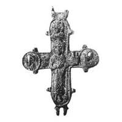

Catalog › CE-0896 · KOR2003-II.3.1.19
Valvă de revers cu prinț cu model de biserică în mâna stângă și trei sfinți în medalioane, neclare
sec. sfârșit XI–XII (1001–1200) · Pekari (Kniaja Gora), raionul Kanev, regiunea Cerkasî, Ucraina · Muzeul Național de Istorie al Ucrainei, Kiev, inv. В-25/2341
single valve of a reliquary cross, aramă; c. sfârșit XI–XII (1001–1200); found at Pekari (Kniaja Gora), raionul Kanev, regiunea Cerkasî, Ucraina; kept at Muzeul Național de Istorie al Ucrainei, Kiev.


Identificare
- Categorie
- Valvă izolată
- Material
- Aramă
- Tehnică
- Turnare în relief; Gravare (incizie)
- Dimensiuni
- Î 59 × L 50 × Gr 4.5 mm
Iconografie
- Revers
- Sf. Boris și Gleb
- Descriere revers
- Valvă de revers; una dintre balamalele de sus este ruptă. Imaginile în relief ale prințului cu model de biserică în mâna stângă și ale trei sfinți în medalioane sunt neclare (în medalionul de sus, imaginea Maicii Domnului — se ghicește maforionul). Suprafața interioară a valvei netedă, în capătul din stânga un curs de metal. Inscripție adâncită, abia vizibilă, la umărul drept al prințului: ГӨ.
- Inscripții
- ГӨ
- Limba
- Slavonă
Datare și atribuire
- Datare
- sec. sfârșit XI–XII (1001–1200)
- Centru
- Necunoscut
- Tipologie
- Korzukhina–Peskova 2003, tip II 3 1
Descoperire
- Localitate
- Pekari (Kniaja Gora)
- Regiune
- raionul Kanev, regiunea Cerkasî
- Țară
- Ucraina
- Context
- Fortificație
Păstrare și referințe
- Colecție
- Muzeul Național de Istorie al Ucrainei, Kiev
- Nr. inventar
- В-25/2341
- Bibliografie
- G. F. Korzukhina, A. A. Peskova, Древнерусские энколпионы. Нагрудные кресты-реликварии XI–XIII вв., Sankt-Petersburg, 2003 [Korzukhina–Peskova 2003], p. 89, cat. nr. II 3 1/19, reprodusă la Табл. 39 (planșe, p. 281).
- Figura
- Табл. 39
- Planșe
- Korzukhina–Peskova 2003, Табл. 39 (planșă fără paginație proprie în PDF; p. 281 tipărită)
- Observații
- Datare după Peskova: sec. sfârșit XI–XII. Circumstanțe: Săpături pe fortificație, N. F. Beleașevski, anii 1890. Foto: L. V. Strokova (NMIU). Coordonate: nu sunt date în sursă.
Citare: Corpus Encolpiorum, CE-0896, Valvă de revers cu prinț cu model de biserică în mâna stângă și trei sfinți în medalioane, neclare, --root/piese/KOR2003-II.3.1.19/ (accesat 2026-10-17).